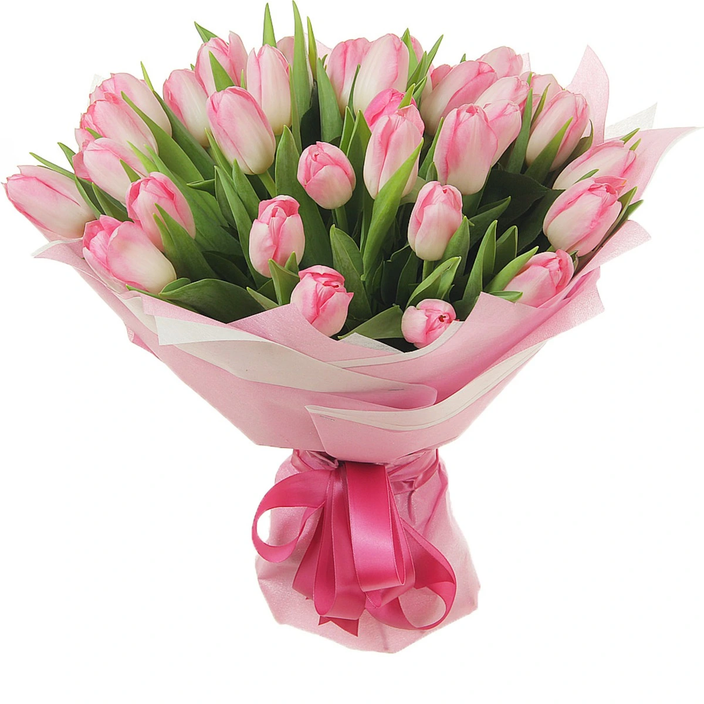

Los tulipanes son flores elegantes y sofisticadas, conocidas por su forma distintiva de copa y una amplia gama de colores vibrantes como el rojo, amarillo, púrpura, y rosa. Estas flores simbolizan el amor perfecto y son muy populares en arreglos románticos y celebraciones especiales. En Florería Pepona, los tulipanes se destacan por su frescura y belleza atemporal. Prefieren ambientes frescos y necesitan un riego moderado para mantenerse en óptimas condiciones. Son perfectos para darle un toque de color y estilo a cualquier espacio.